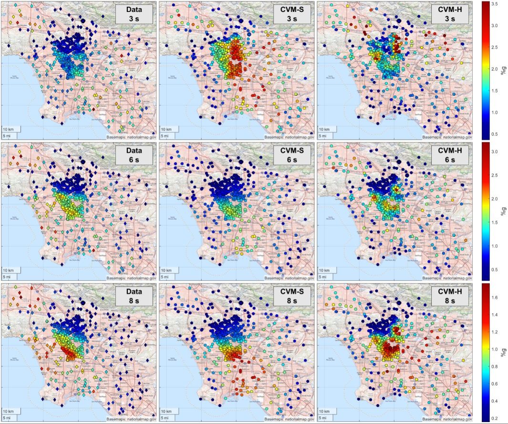

Earthquake Spectra Paper Available Online
Our recent work is now available online in Earthquake Spectra.
The paper contains a comprehensive study of the ground-motion response in urban Los Angeles during the largest events (M7.1 and M6.4) of the 2019 Ridgecrest earthquake sequence. Considering recordings from multiple regional seismic networks and from the very dense Community Seismic Network the study achieves unprecedented station numbers and density for the area. The paper further examines the correlation of the measured response with site parameters (Vs30 and basement depth), as well as the performance of state-of-the-art methods for estimating the ground motions: 3D finite-difference simulations and ground motion prediction equations.

Figure: Data and model-predicted (simulations) RotD50 maps for the M7.1 earthquake. Column 1: Observations, Column 2: CVM-S model, Column 3: CVM-H model. Row 1: T = 3 s, Row 2: T = 6 s, Row 3: T = 8 s. Damping ratio = 5%. This is Figure 11 in the paper.